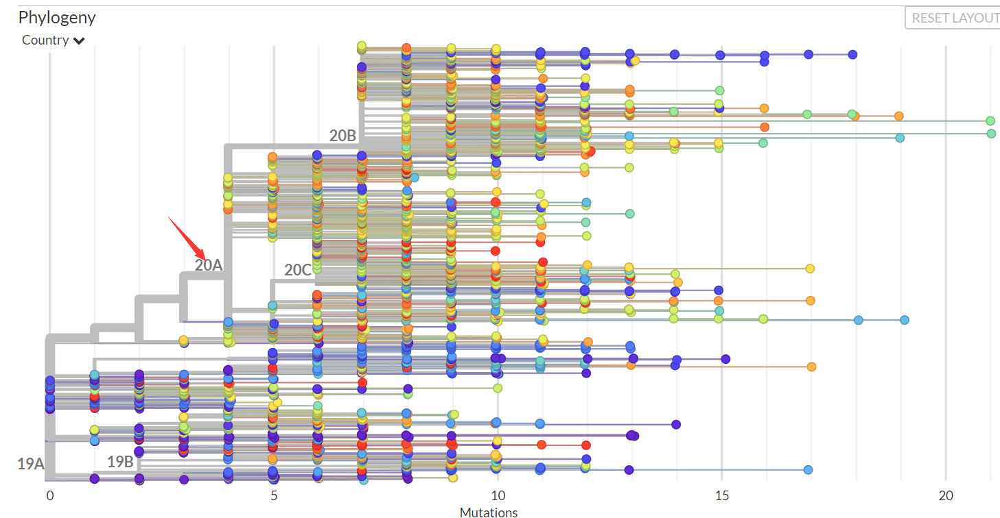
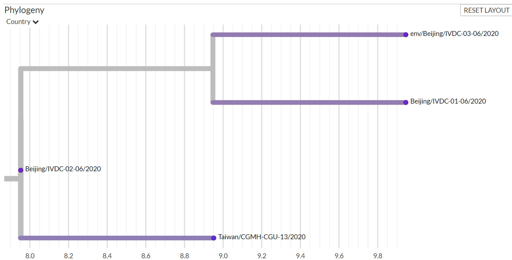

体会一下加州的确诊数曲线……

斯图亚特9
2020-06-19
斯图亚特9
2020-06-19
年轻的新冠患者死亡率很低，而年长的比较高。是不是可以说，各国的新冠死亡率很大程度上反映的是人口老龄化程度？
斯图亚特9
2020-06-19
终于看完了这本《The Idea of the Brain》，去年底出版的新书。我之前看的几本讲大脑的书都让人感觉很好，似乎科技日新月异，我们对大脑的认知越来越丰富。但这本书则是让人感觉很不好的书，按照书中的意思是，不仅我们对大脑的理解很肤浅，而且连如何找到问题的答案都不知道。书中充斥着这样的语句：过去五十年我们对大脑的理解没有进展；fMRI的论文没有一篇值得读的；应该禁止使用“意识”这个词二十年。总之各种悲观的论调。但还是强烈推荐这本书了，解答了很多我之前半懂不懂的很多东西——虽然很多时候答案是科学家们也都不懂吧。
斯图亚特9
2020-06-19
同样一本书，京东的中文版号称为5-10岁适读，美国亚马逊上的英文版号称7-10岁。
斯图亚特9
2020-06-19
转发微博
@polyhedron:
#covid19#
中國疾控中心這次上傳的三條新發地市場相關數據，患者的NMDC60013902-01、NMDC60013903-02以及環境的NMDC60013903-03，在GISAID（ 网页链接 ）和 nextstrain （ 网页链接 ）网站上編号爲 IVDC-01（圖1）、IVDC-02和IVDC-03（圖2），我看了上傳信息，均爲新發地市場，所以雖然編号不同，應該就是這幾個樣本。IVDC-01是53歲男性患者，IVDC-02是25歲男性患者，IVDC-03是環境樣本拭子，沒說具體是什麼。三個樣本的收集日期寫的都是2020-06-11。這樣IVDC-01應該就是在西城區頭一位被確診的大爺身上採到的。
网页链接 ）和 nextstrain （ 网页链接 ）网站上編号爲 IVDC-01（圖1）、IVDC-02和IVDC-03（圖2），我看了上傳信息，均爲新發地市場，所以雖然編号不同，應該就是這幾個樣本。IVDC-01是53歲男性患者，IVDC-02是25歲男性患者，IVDC-03是環境樣本拭子，沒說具體是什麼。三個樣本的收集日期寫的都是2020-06-11。這樣IVDC-01應該就是在西城區頭一位被確診的大爺身上採到的。
從大的分支來說，這一支就是武漢華南市場爆發簇的下游，即歐洲主簇的下游。這個歐洲主簇，也就是A23403G突變，引起了S蛋白氨基酸D614G突變的那個，在nextstain上目前稱作20A支系，圖3，最早於2020年2月下旬發現，應該就是在意大利北部主要流行的那支。然後新發地這幾個序列又是在28881-28883這連續三個鹼基突變的下游（20B支系）。（圖4的紅圈爲這三個樣本）因此從大的演化來看，確實很大可能新發地的病毒是從歐洲傳來的。
然後繼續看最末端的分化，從20B的星簇下來，所有新發地的樣本都在一個小支系裏面（圖5），三個樣本的序列都不一樣，相互差了2個鹼基。西城大爺IVDC-01和環境樣本IVDC-03都離25歲男性樣本IVDC-02有了進一步的兩個突變。如果這幾個樣本序列沒有經過篩選，而是隨機採樣，根據突變率及上游節點時閒猜測，這一支系在新發地流行，少說有半個多月，多則可能有3個多月（20B這支星簇上最早的奧地利樣本是2月24号採樣，僅和IVDC-02相差一步突變）。假如三個樣本的序列完全相同，那說明流傳時閒應該不久，但從現在樹形來看，IVDC-02到IVDC-01和IVDC-03中閒應該至少還有一個患者，也可能是很多代患者，這樣在新發地流行的時閒不會短了。
而且更奇怪的是IVDC-02的下游多一個突變還有個臺灣桃源樣本CGMH-CGU-13，是3月17号採樣，不知道是不是機場入境的採樣。樣本也在文章上發表過了，在网页链接 ，但文章沒有寫明該病毒攜帶者的病毒來源。現在疑惑的就是，新發地和臺灣這個樣本是各自偶然產生了C6026T這一突變，還是新發地的老樣本傳染到了臺灣（因爲臺灣樣本在新發地IVDC-02樣本的下游），還是有某個已有C6026T突變的病毒至少3月中以前即已產生，潛伏在什麼地方，先傳了臺灣被發現，後來又過了2個多月纔又在新發地被發現。
總歸這幾條序列說明新冠病毒可能早則3月初（通過上游和臺灣的序列和時閒推算），最晚5月中（按突變率估的下限）已經在新發地流行。防控的盲點還是不少的，但同時也說明想防眞的是很難。
中國疾控中心這次上傳的三條新發地市場相關數據，患者的NMDC60013902-01、NMDC60013903-02以及環境的NMDC60013903-03，在GISAID（
從大的分支來說，這一支就是武漢華南市場爆發簇的下游，即歐洲主簇的下游。這個歐洲主簇，也就是A23403G突變，引起了S蛋白氨基酸D614G突變的那個，在nextstain上目前稱作20A支系，圖3，最早於2020年2月下旬發現，應該就是在意大利北部主要流行的那支。然後新發地這幾個序列又是在28881-28883這連續三個鹼基突變的下游（20B支系）。（圖4的紅圈爲這三個樣本）因此從大的演化來看，確實很大可能新發地的病毒是從歐洲傳來的。
然後繼續看最末端的分化，從20B的星簇下來，所有新發地的樣本都在一個小支系裏面（圖5），三個樣本的序列都不一樣，相互差了2個鹼基。西城大爺IVDC-01和環境樣本IVDC-03都離25歲男性樣本IVDC-02有了進一步的兩個突變。如果這幾個樣本序列沒有經過篩選，而是隨機採樣，根據突變率及上游節點時閒猜測，這一支系在新發地流行，少說有半個多月，多則可能有3個多月（20B這支星簇上最早的奧地利樣本是2月24号採樣，僅和IVDC-02相差一步突變）。假如三個樣本的序列完全相同，那說明流傳時閒應該不久，但從現在樹形來看，IVDC-02到IVDC-01和IVDC-03中閒應該至少還有一個患者，也可能是很多代患者，這樣在新發地流行的時閒不會短了。
而且更奇怪的是IVDC-02的下游多一個突變還有個臺灣桃源樣本CGMH-CGU-13，是3月17号採樣，不知道是不是機場入境的採樣。樣本也在文章上發表過了，在
總歸這幾條序列說明新冠病毒可能早則3月初（通過上游和臺灣的序列和時閒推算），最晚5月中（按突變率估的下限）已經在新發地流行。防控的盲點還是不少的，但同時也說明想防眞的是很難。
- 
- 